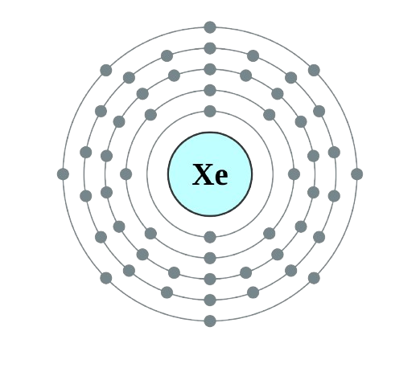

Xenon
Xenon
is a noble gas used in lighting, medical imaging, and as a general anesthetic.
Atomic Structure

Atomic Information
Property
Value
Atomic Number
54
Symbol
Xe
Atomic Mass
131.29 u
Electron Configuration
1s
2
2s
2
2p
6
3s
2
3p
6
3d
10
4s
2
4p
6
4d
10
5s
2
5p
6
State at Room Temperature
Gas
Uses of Xenon
Used in high-intensity lamps and flashlights.
Used in medical imaging as a contrast agent.
Used as a general anesthetic in certain medical procedures.